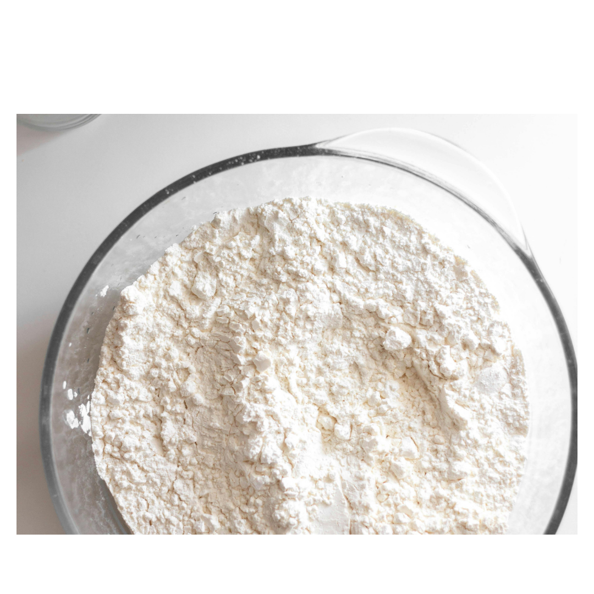

TRIN 03 · EFTER CA. 24 TIMER
Giv din surdej frisk næring
At fodre betyder, at du beholder lidt af surdejen og tilsætter frisk mel og vand. Det er din næste lille aktivitet.
GØR DETTE NU · VEJ I GRAM
- 50 g af din surdej
- 50 g hvidt hvedemel
- 50 g postevand
Vægt · glas · ske · løst låg. Nu bruger du hvidt hvedemel, ikke fuldkornshvedemel.
Se materialelisten-
Behold 50 g surdej
Vej 50 g af blandingen af, og kassér resten. Du kan bruge et rent glas eller fjerne resten fra det glas, du allerede har.
-
Tilsæt frisk mel og vand
Tilsæt 50 g hvidt hvedemel og 50 g vand. Rør grundigt, til der ikke er tørt mel tilbage.
-
Dæk løst, og lad den hvile
Læg låget løst på. Lad surdejen stå cirka 24 timer ved stuetemperatur, omkring 21 °C.

Det skal du kigge efter
Der kan komme bobler og lidt vækst. Der kan også være meget lidt at se. Begge dele kan forekomme i starten — giv den tid, og følg fodringsplanen.
Hvad sker der nu?
Efter denne fodring venter du igen cirka 24 timer. Fra tredje dag begynder du at fodre cirka hver 12. time, for eksempel morgen og aften.
Er du i tvivl om din surdej?
Der behøver ikke ske noget synligt endnu. Se, hvad der er normalt, og hvornår du skal starte forfra.
Få hjælp til din surdej